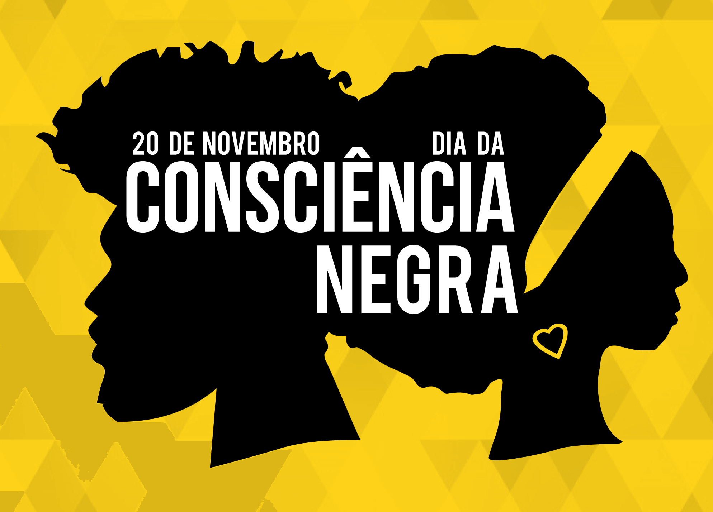
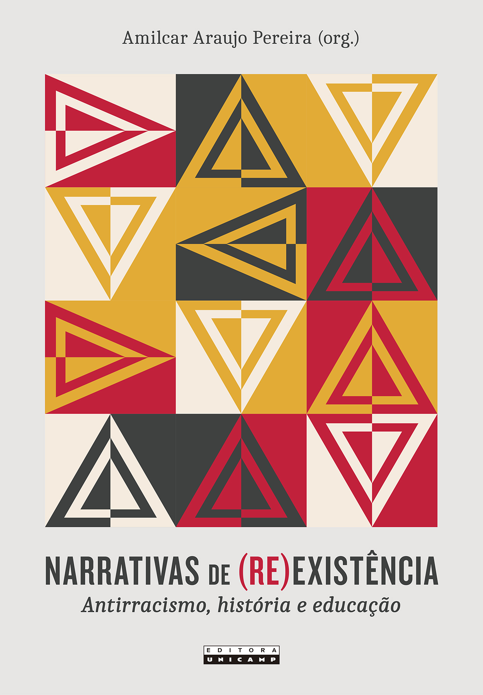
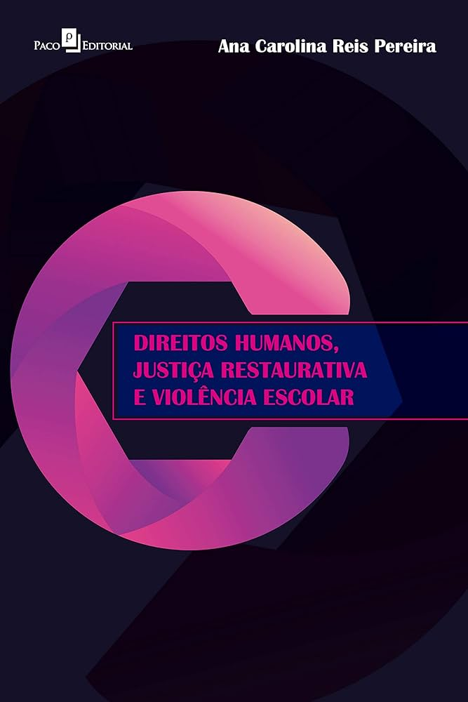
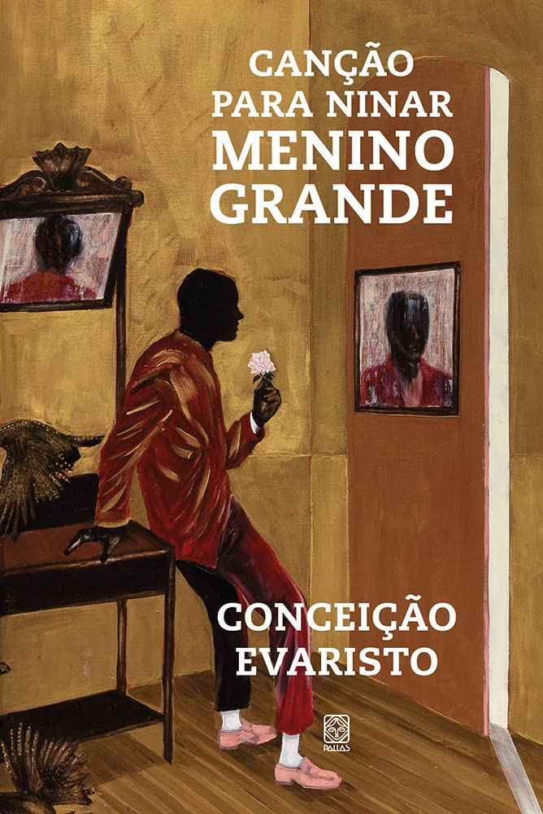

“A Educação Antirracista dá oportunidade
para todos os que estão no ambiente escolar
terem uma aprendizagem digna,
feliz, igualitária e equânime.” - Rosa Margarida de Carvalho Rocha

Sobre
O Dia Nacional de Zumbi e da Consciência Negra, celebrado em 20 de novembro, foi instituído oficialmente pela lei nº 12.519, de 10 de novembro de 2011. A data faz referência à morte de Zumbi, o então líder do Quilombo dos Palmares situado entre os estados de Alagoas e Pernambuco, na região Nordeste do Brasil. Zumbi foi morto em 1695, na referida data, por bandeirantes liderados por Domingos Jorge Velho.
Livros
Narrativas de (re)existência: antirracismo, história e educação - Amilcar Pereira de Araujo

O livro discute, na primeira parte, políticas de combate ao racismo no Brasil. Já na segunda metade, a partir de uma revisão histórica, discute questões para promoção de cuidado
Direitos Humanos, Justiça Restaurativa e Violência Escolar - Ana Pereira

O livro discute como a justiça restaurativa pode ser um exercício de direitos humanos dentro do ambiente escolar a partir de suas potencialidades e desafios.
Canção de ninar para menino grande - Conceição Evaristo

Trata-se de um mosaico afetuoso de experiências negras a partir de homens e mulheres em diferentes momentos da vida, permeando a discussão de raça no Brasil.